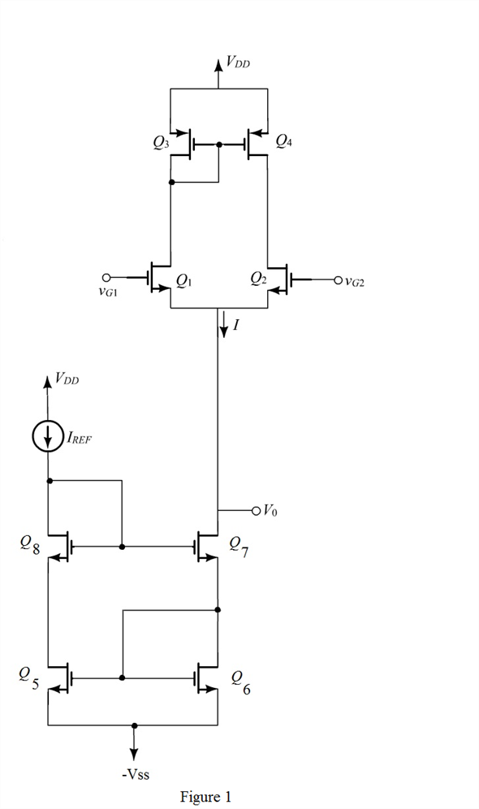

Determine the drain current for transistors  to
to  .
.
Refer to Figure P8.87 and Figure 8.32 (a) in the text book.
Draw the circuit for active loaded differential amplifier with the bias current source implemented with the modified Wilson mirror.

Determine the drain current for transistors to .
Write the expression for the drain current for transistors  to
to  .
.
Substitute  for , for .
for , for .
Determine the gate to source voltage for transistors  to
to  .
.
 to
to  .
.
Write the expression for the drain current for transistors  to
to  .
.
Substitute  for and
for and  for
for  .
.
Determine the gate to source voltage for transistors  to
to  .
.

Apply Kirchhoff’s voltage law from the source voltage  to the source voltage as shown in Figure 1.
to the source voltage as shown in Figure 1.
Since, the drain and gate terminals of each transistor are shorted; replace the drain source voltage with gate to source voltage
with gate to source voltage .
.
Substitute  for
for  ,
,  for
for  , for and
, for and  for .
for .
Thus, the lowest value for the power supply is .